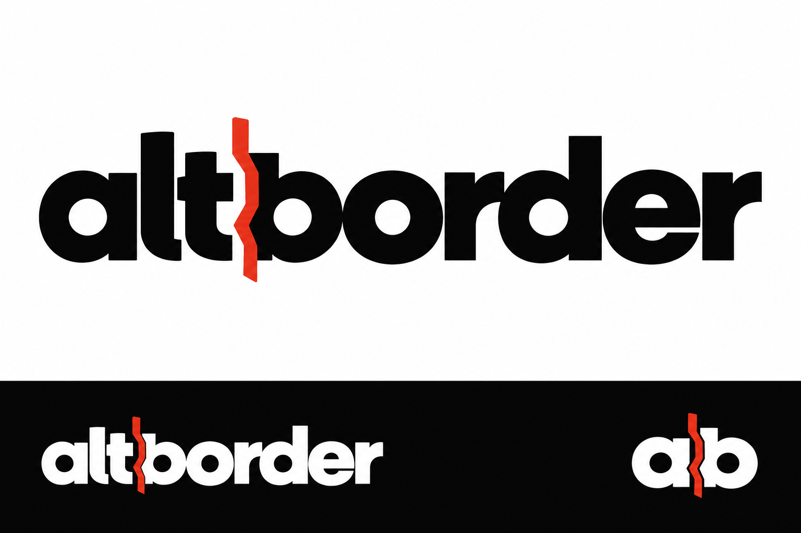
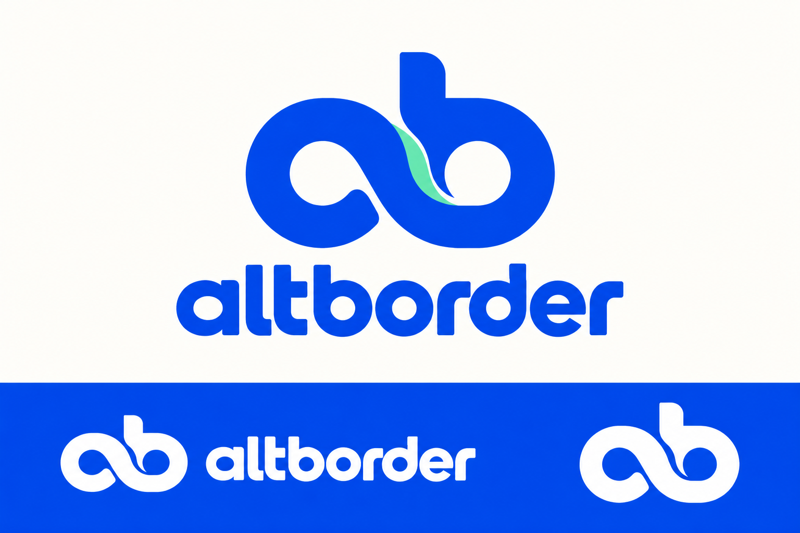
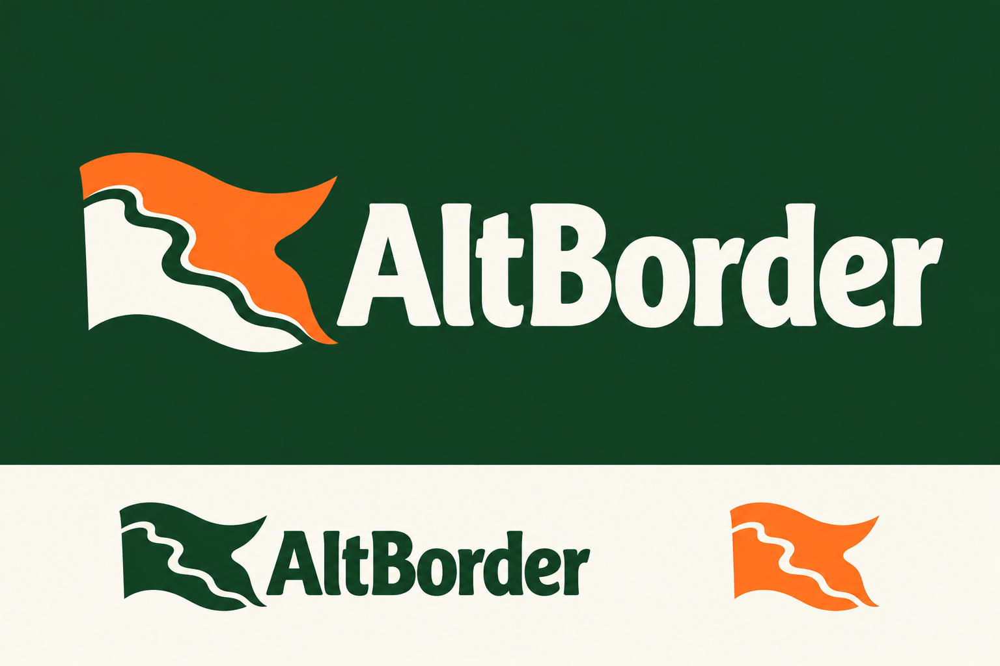

D · Faultline
Custom lettering with a red border cut.

E · Contour
A flowing ab symbol with a map-like boundary.

F · Own World
An invented flag for a world you can change.

Custom lettering with a red border cut.

A flowing ab symbol with a map-like boundary.

An invented flag for a world you can change.
